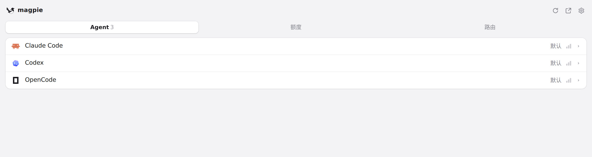

#358 界面预览
commit ca76c7b · 回到 PR · PR 把 DimAgent 接入 Agent 页：列表里多出一行 DimAgent（自带图标，model 与 effort 两个选择器），并新增两条中文文案——model/effort 选择器悬停提示里的「全局默认与选择优先级」说明，以及写入后状态栏里的「重启 DimAgent 加载修改」提示。
红线是鼠标走过的轨迹，红色圆环是一次点击；底部文字是这一步在做什么。空格暂停，← → 逐段查看。
 Agent 页的 DimAgent 行与选择器 · Agent 页列表：DimAgent 行及其图标、model 与 effort 两个选择器
Agent 页的 DimAgent 行与选择器 · Agent 页列表：DimAgent 行及其图标、model 与 effort 两个选择器
 Agent 页的 DimAgent 行与选择器 · Agent 页列表全貌：DimAgent 一行本应出现在这个列表里
Agent 页的 DimAgent 行与选择器 · Agent 页列表全貌：DimAgent 一行本应出现在这个列表里

菜单栏面板里的 DimAgent 行 · 菜单栏面板的 Agent 列表里的 DimAgent 行